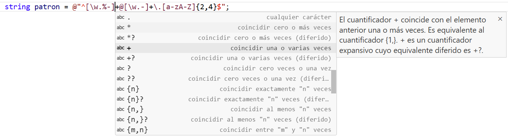

Unidad 11
Descargar estos apunte en pdf o html
Índice
Manejo de cadenas avanzado y expresiones regulares
Introducción
El manejo de cadenas es una parte fundamental de la programación, ya que las cadenas son uno de los tipos de datos más utilizados. En esta unidad, vamos a profundizar en el manejo avanzado de cadenas y en el uso de expresiones regulares para trabajar con ellas.
Cadenas Inmutables
Las hemos usado ya y se definen a través de la clase System.String o su alias string. Al tratarse de una clase será de un tipo referencia.
Al ser inmutables, una vez creadas no se pueden modificar. Cualquier operación que se realice sobre una cadena devolverá una nueva cadena con el resultado de la operación.
Internamente y deforma transparente para nosotros, estos objetos se almacenan como un array de caracteres. Una operación que modifique una cadena, como por ejemplo la concatenación, creará un nuevo array de caracteres con el resultado de la operación y devolverá una nueva cadena. Esto nos permitirá indizar de forma análoga a como hacemos en un array, el acceso a los caracteres de una cadena.
Formas de instanciar objetos cadena
// A partir de un literal de cadena.
string t1 = "Adios";
// A partir de una colección de caracteres.
string t2 = new ([ 'H', 'o', 'l', 'a' ]);
// Inicializando con un carácter de relleno.
string t3 = new('0', 10);
// Resultado de la concatenación de objetos cadena.
// Nótese que la suma de cadenas devuelve un nuevo objeto cadena en memoria. Reflexionaremos sobre sto más adelante.
string t4 = t1 + t2;
// Para una COPIAS EN MEMORIA
// ✅ Podemos hacer
string t5 = new([..t1]);
string t5 = new(t1.ToCharArray());
Console.WriteLine(ReferenceEquals(t1, t5)); // Imprime "False"
// ❌ No deberíamos hacer 💀
string t5 = t1; // t1 y t5 serán la misma instancia en memoria.
string t5 = $"{t1}"; // t1 y t5 serán la misma instancia en memoria por optimizaciones de ejecución
string t5 = (string)t1.Clone(); // t1 y t5 serán la misma instancia en memoria.
Console.WriteLine(ReferenceEquals(t1, t5)); // Imprime "True"
Después de ejecutar este código tendremos 5 objetos cadena instanciados en memoria, con sus respectivas referencias.
Comparación de cadenas
Puesto que el tipo string es un tipo referencia, en principio la comparación entre objetos de este tipo debería comparar sus direcciones de memoria como acabamos de ver que pasa con cualquier tipo referencia. Sin embargo, si ejecutamos el siguiente código veremos que esto no así ocurre en el caso de las cadenas porque el lenguaje sabe compararlas:
string t1 = "Adios";
string t2 = t1;
string t3 = new([..t1]);
Console.WriteLine(t1 == t1); // Muestra True
Console.WriteLine(t1 == t2); // Muestra True
Console.WriteLine(t1 == t3); // Muestra True, porque aunque sean objetos diferentes la comparación se hace en profundidad.
Console.WriteLine(Object.ReferenceEquals(t1, t3)); // Muestra False
Esto se debe a que para hacer más intuitivo el trabajo con cadenas, en C# se ha modificado el operador de igualdad == para que cuando se aplique entre cadenas, se considere que sus operandos son iguales sólo si son lexicográficamente equivalentes y no si referencian al mismo objeto en memoria.
Obtener la longitud de una cadena
Usaremos la propiedad Length que me indicará cuantos caracteres contiene la cadena. Este valor es de solo lectura y no se puede modificar.
Console.WriteLine("Hola".Length); // Mostrará 4
string t = "Adios";
Console.WriteLine(t.Length); // Mostrará 5
Accediendo a los caracteres de una cadena
Puedo acceder a un carácter a través del índice, pero no es posible modificar los caracteres que las forman por ser un objeto inmutable. Esto se debe a que el compilador comparte en memoria las referencias a literales de cadena lexicográficamente equivalentes, para así ahorrar memoria. Por tanto, si se permitiese modificar los cambios que se hiciesen a través de una variable a una cadena compartida, afectarían al resto de variables que la compartan, lo que podría causar errores difíciles de detectar.
Cuando hacemos...
string texto = "Hola";
Esto nos permitirá acceder a cada uno de los caracteres que conforman la cadena, a través del operador de indexación texto[índice] donde índice será un valor entre 0 y texto.Length-1 o ^1 si usamos un tipo Index como vimos en el arrays..
Recordemos una poco el funcionamiento de los índices:
// Muestra el carácter 'H'
Console.WriteLine(texto[0]);
// Muestra el carácter 'a'
Console.WriteLine(texto[^1]);
// ❌ ERROR de OutOfBounds (Fuera de límites)
Console.WriteLine(texto[5]);
// ❌ ERROR solo lectura.
t[0] = 'M';
t[^1] = 'i';
Recorrer los caracteres de una cadena
Básicamente podremos hacerlo a través de un bucle for y un bucle foreach como hemos visto en el caso de los arrays.
string s = "Hola";
for (int i = 0; i < s.Length; i++)
{
Console.Write($"[{i},{s[i]}] ");
}
Console.WriteLine();
foreach (var (i, c) in s.Index())
{
Console.Write($"[{i},{c}] ");
}
Console.WriteLine();
Console.Write(string.Join(" ", [..s]));
Console.WriteLine();
foreach (char c in s)
{
Console.Write($"{c} ");
}
Console.WriteLine();
Mostrará por la consola:
[0,H] [1,o] [2,l] [3,a] [0,H] [1,o] [2,l] [3,a] H o l a H o l a
Operaciones de interés sobre objetos cadena
Podré realizar numerosas operaciones sobre los objetos cadena. Pero debré tener en cuenta que al ser inmutables, cualquier operación que realice sobre una cadena devolverá un nuevo objeto cadena con el resultado de la operación, y no modificará la cadena original.
Para ello dispondré de numerosos métodos ya definidos en la clase string de los que destacaremos los más comunes y útiles a continuación y que podremos encontrar en otros lenguajes de programación...
Veamos algúnos de los más útiles a través de ejemplos...
cadena.Trim(): Elimina los espacios en blanco al principio y al final de la cadena.
cadena.TrimStart(): Elimina los espacios en blanco al principio de la cadena.
cadena.TrimEnd(): Elimina los espacios en blanco al final de la cadena.
string cadena = " Hola Mundo ";
Console.WriteLine(cadena.Trim()); // Muestra "Hola Mundo"
cadena.PadLeft(int totalWidth): Rellena la cadena con espacios a la izquierda hasta alcanzar el ancho total especificado.
cadena.PadRight(int totalWidth): Rellena la cadena con espacios a la derecha hasta alcanzar el ancho total especificado.
string cadena = "Hola";
Console.WriteLine(cadena.PadLeft(10)); // Muestra " Hola"
Console.WriteLine(cadena.PadRight(10)); // Muestra "Hola "
cadena.ToUpper() / cadena.ToLower(): Devuelve un nuevo objeto cadena con equivalente en mayúsculas de la cadena actual.
string cadena = "Hola";
Console.WriteLine(cadena.ToLower()); // Muestra "hola"
Ejemplo 1:
Define un método con la signatura static string Capitaliza(string s) que recibe una cadena y me devuelve la otra capitalizada esto es. Si entra la cadena "esto es un título capitalizado" me devolverá "Esto Es Un Título Capitalizado"
public static string Capitaliza(string s)
{
string sCapitalizada;
if (!string.IsNullOrEmpty(s)) // Si la cadena no es null o vacía.
{
// Pasamos el primer carácter a cadena y después esa cadena a mayúscula.
sCapitalizada = s[0].ToString().ToUpper();
// Otra forma de hacerlo es pasar primero el carácter a mayúscula y después a cadena.
// sCapitalizada = char.ToUpper(s[0]).ToString();
// Recorremos el resto de caracteres de la cadena
// Si el anterior es un espacio es blanco lo concatenamos a la cadena capitalizada
// (pasándolo previamente a cadena) sino es espacio en blanco lo dejamos tal cual
// (pasándolo previamente a cadena)
// Usamos un bucle for en lugar de un foreach porque necesitamos saber la posición anterior.
for (int i = 1; i < s.Length; i++)
sCapitalizada += char.IsWhiteSpace(s[i - 1])
? s[i].ToString().ToUpper()
: s[i].ToString();
}
else
sCapitalizada = s;
return sCapitalizada;
}
Console.WriteLine(Capitaliza("hola caracola")); // Mostrará "Hola Caracola"
Fijémonos que cada vez que hacemos ToString() y concatenamos esa cadena a la cadena capitalizada. Estamos creando objetos cadena nuevos en memoria que luego se van a desechar. Esto es, para una cadena de 100 caracteres crearemos 200 objetos cadena, lo cual es muy costoso a nivel de proceso.
Por esta razón este tipo de procesos los realizaremos con cadenas mutables que veremos más adelante. Es más, analizadores semánticos de código como SonarLint me indicarán que este tipo de concatenaciones no es una buena práctica.
Ejemplo 2:
Escribe una método que "Normalize para comparación" una cadena de entrada. Consideraremos normalizar quitar tíldes, diéresis y pasar todos los caracteres a minúsculas.
public static string Normaliza(string s)
{
string sN = "";
foreach (char c in s)
{
sN += char.ToLower(c) switch
{
'á' => "a",
'é' => "e",
'í' => "i",
'ó' => "o",
'ú' => "u",
'ü' => "u",
_ => c.ToString().ToLower()
};
}
return sN;
}
cadena.ToCharArray(): Convierte una cadena de caracteres en una array de caracteres. Recuerda que internamente al objeto cadena es un array de caracteres.
string cadena = "Hola";
char[] array = cadena.ToCharArray();
char[] array = [..cadena]; // Otra forma de hacerlo.
Cadena.IndexOf(char c) / Cadena.IndexOf(string s): Devuelve la posición de la primera ocurrencia del carácter o la cadena empezando a buscar por índice hasta Length (0 si no se lo paso) y si no encuentra ninguna ocurrencia retorna -1.
string nombre = "Manuel García";
Console.WriteLine(nombre.IndexOf('a')); // Imprime : 1
Console.WriteLine(nombre.IndexOf("el")); // Imprime : 4
Console.WriteLine(nombre.IndexOf("a", 3)); // Imprime : 8
Console.WriteLine(nombre.IndexOf("z")); // Imprime : -1
Cadena.LastIndexOf(char c) / Cadena.LastIndexOf(string s): Devuelve la posición de la última ocurrencia del carácter o la cadena empezando a buscar por índice hasta 0 (Length si no se lo paso) y si no encuentra ninguna ocurrencia retorna -1.
string nombre = "Manuel García";
Console.WriteLine(nombre.LastIndexOf("a")); // Imprime : 12
Console.WriteLine(nombre.LastIndexOf('a', 2)); // Imprime : 1
Ejemplo 1:
Escribe un método, que sin recorrer la cadena, devuelva un entero indicando el número de apariciones de un palabra en una frase.
Llámalo: int Coincidencias(string palabra, string frase)
public static class Program
{
public static int Coincidencias(string palabra, string frase)
{
int veces = 0;
int iComienzo = -1;
while ((iComienzo = frase.IndexOf(palabra, iComienzo + 1)) >= 0) veces++;
return veces;
}
public static void Main()
{
string s = "oca, gallina, perro, perro, oca, oca, cerdo";
Console.WriteLine(Coincidencias("oca", s)); // Muestra 3
Console.WriteLine(Coincidencias("perro", s)); // Muestra 2
Console.WriteLine(Coincidencias("caballo", s)); // Muestra 0
}
}
Ejemplo 2:
Escribe una función que reciba dos palabras, y averigüe si son anagramas (están formadas por las mismas letras pero en diferentes posiciones).
Ej. (aprobar y probará), (códigos y cogidos), etc.
// Una aproximación simplificada podría ser.
public static string Normaliza(string s)
{
const string TILDES = "áéíóúü";
const string SUSTITUCIONES = "aeiouu";
string sN = "";
foreach (char c in s)
{
sN += i >= 0 ? SUSTITUCIONES[i].ToString() : c.ToString();
int i = TILDES.IndexOf(c);
}
return sN;
}
public static bool Anagramas(string p1, string p2)
{
bool anagramas = (p1.Length == p2.Length);
p1 = Normaliza(p1);
p2 = Normaliza(p2);
if (anagramas)
{
for (int i = 0; i < p1.Length && anagramas; i++)
anagramas = p1.IndexOf(p2[i]) > -1 && p2.IndexOf(p1[i]) > -1;
}
return anagramas;
}
Ejemplo 3:
Haz un método que, a partir de una contraseña de entrada, indique el nivel de protección, devolviendo una de las siguientes cadenas:
- Muy débil: Contiene solo números o tiene menos de 8 caracteres.
- Débil: Contiene solo letras y tiene al menos 8 caracteres.
- Fuerte: Contiene letras y números y al menos 8 caracteres.
- Muy fuerte: Contiene letras y/o números, caracteres especiales y al menos 8 caracteres.
public static class Program
{
public static bool SoloNumeros(string texto)
{
bool todoEsLoQueBusco = true;
for (int i = 0; i < texto.Length && todoEsLoQueBusco; i++)
todoEsLoQueBusco = char.IsDigit(texto[i]);
return todoEsLoQueBusco;
}
public static bool SoloLetras(string texto)
{
bool todoEsLoQueBusco = true;
for (int i = 0; i < texto.Length && todoEsLoQueBusco; i++)
todoEsLoQueBusco = char.IsLetter(texto[i]);
return todoEsLoQueBusco;
}
public static bool HayUnCaracterEspecial(string texto)
{
bool especial = false;
for (int i = 0; i < texto.Length && !especial; i++)
especial = !char.IsLetterOrDigit(texto[i]);
return especial;
}
public static string NivelSeguridad(string clave)
{
string nivel;
if (clave.Length < 8 || SoloNumeros(clave))
nivel = "Muy Débil";
else if (SoloLetras(clave))
nivel = "Débil";
else if (!HayUnCaracterEspecial(clave))
nivel = "Fuerte";
else
nivel = "Muy Fuerte";
return nivel;
}
public static void Main()
{
Console.Write("Introduce una clave: ");
string clave = Console.ReadLine();
Console.WriteLine($"Su nivel de seguridad es {NivelSeguridad(clave)}");
}
}
Cadena.Substring(int startIndex, int length) / Cadena.Substring(int startIndex): Recupera una subcadena de la instancia. La subcadena comienza en una posición de carácter especificada y tiene una longitud especificada.
string s1 = "aaBBBaa";
// Extraigo una subcadena de 3 caracteres desde el índice 2.
string s2 = s1.Substring(2, 3);
Console.WriteLine(s2); // Muestra "BBB"
También podemos usar rangos de índices para extraer subcadenas, como vimos con los arrays:
string s1 = "aaBBBaa";
// Extraigo una subcadena desde el índice 2 hasta el índice 5 (excusive)
string s2 = s1[2..5];
Console.WriteLine(s2); // Muestra "BBB"
Cadena.Remove(int startIndex, int length) / Cadena.Remove(int startIndex): Devuelve una nueva cadena en la que se ha eliminado un número de caracteres especificado en la instancia actual a partir de una posición especificada.
string s1 = "Estofado";
// Elimino una subcadena de 2 caracteres desde el índice 3.
string s2 = s1.Remove(3, 2);
Console.WriteLine(s2); // Muestra "Estado"
¿Se te ocurre cómo hacerlo usado rangos de índices?
string s1 = "Estofado";
// Elimino una subcadena desde el índice 3 hasta el índice 5 (ambos exclusive)
string s2 = s1[..3] + s1[5..];
Console.WriteLine(s2); // Muestra "Estado"
Cadena.Replace(char oldChar, char newChar) / Cadena.Replace(string oldValue, string newValue): Devuelve una nueva cadena en la que todas las apariciones de una cadena especificada en la instancia actual se reemplazan por otra cadena especificada.
string s1 = "oca, gallina, perro, perro, oca, gallina";
// Sustituimos "oca" por "pato"
s1 = s1.Replace("oca", "pato");
Console.WriteLine(s1); // Muestra "pato, gallina, perro, perro, pato, gallina"
🎓 Caso de Estudio
Vamos a crear un programa que extraiga el texto entre dos delimitadores de texto de una cadena. Por ejemplo, si la cadena es "<h1>Título Principal</h1><p>Este es un párrafo.</p>", queremos extraer el texto entre <h1> y </h1> y obtener "Título Principal". Define un metodo llamado ExtraerEntre para realizar esta tarea.
public class Programa
{
public static string? ExtraerEntre(
string cadenaFuente,
string delimitadorInicial,
string delimitadorFinal)
{
string? resultado = null;
if (!string.IsNullOrEmpty(cadenaFuente)
&& !string.IsNullOrEmpty(delimitadorInicial)
&& !string.IsNullOrEmpty(delimitadorFinal))
{
int indiceInicial = cadenaFuente.IndexOf(delimitadorInicial);
if (indiceInicial != -1)
{
indiceInicial += delimitadorInicial.Length;
int indiceFinal = cadenaFuente.IndexOf(delimitadorFinal, indiceInicial);
if (indiceFinal != -1)
{
resultado = cadenaFuente.Substring(indiceInicial, indiceFinal - indiceInicial);
}
}
}
return resultado;
}
public static void Main()
{
string texto = "<h1>Título Principal</h1><p>Este es un párrafo.</p>";
string? titulo = ExtraerEntre(
cadenaFuente: texto,
delimitadorInicial: "<h1>",
delimitadorFinal: "</h1>")
?? "No encontrado";
Console.WriteLine($"Texto original: \"{texto}\"");
Console.WriteLine($"Texto extraído entre '<h1>' y '</h1>': {titulo}");
}
}
🚀 Ampliación opcional:
Vamos a implementar el método ExtraerEntre en otros lenguajes de programación como JavaScript y Kotlin y así comparar las coincidencias en el uso de los métodos ya vistos.
JavaScript:
function extraerEntre(cadenaFuente, delimitadorInicial, delimitadorFinal) {
let resultado = null;
if (cadenaFuente && delimitadorInicial && delimitadorFinal) {
const indiceInicial = cadenaFuente.indexOf(delimitadorInicial);
if (indiceInicial !== -1) {
const indiceInicioContenido = indiceInicial + delimitadorInicial.length;
const indiceFinal = cadenaFuente.indexOf(delimitadorFinal, indiceInicioContenido);
if (indiceFinal !== -1) {
resultado = cadenaFuente.substring(indiceInicioContenido, indiceFinal);
}
}
}
return resultado;
}
Kotlin:
fun extraerEntre(
cadenaFuente: String,
delimitadorInicial: String,
delimitadorFinal: String
): String? {
var resultado: String? = null
if (cadenaFuente.isNotEmpty() && delimitadorInicial.isNotEmpty() && delimitadorFinal.isNotEmpty())
{
val indiceInicial = cadenaFuente.indexOf(delimitadorInicial)
if (indiceInicial != -1) {
val indiceInicioContenido = indiceInicial + delimitadorInicial.length
val indiceFinal = cadenaFuente.indexOf(delimitadorFinal, indiceInicioContenido)
if (indiceFinal != -1) {
resultado = cadenaFuente.substring(indiceInicioContenido, indiceFinal)
}
}
}
return resultado
}
Cadenas Mutables
Si deseamos utilizar cadenas mutables. Deberemos usar la clase System.Text.StringBuilder, que funciona de manera similar a string, pero permite la modificación de sus cadenas en tanto que estas no se comparten en memoria. Podemos decir que, las operaciones de acceso a un carácter son iguales que en los objetos de la clase string.
Aviso
No será posible recorrerlas con un foreach, solo con for.
Instanciar un StringBuilder
Para crear objetos de este tipo, basta pasar como parámetro de su constructor el objeto string que contiene la cadena a representar mediante un StringBuilder, y para convertir un StringBuilder en String siempre puede usarse su método cadenaMutable.ToString().
string s = "Hola";
StringBuilder sb = new(s); // Pasamos de String a StringBuilder
sb[sb.Length-1] = 'i'; // Podemos modificar un caracter por ser mutable
s = sb.ToString(); // Pasamos de StringBuilder a String
Console.WriteLine(s); // Muestra "Holi"
Ejemplo 1:
Reimplementemos el método con la signatura static string Capitaliza(string s) que recibe una cadena y me devuelve la otra capitalizada esto es. Si entra la cadena "esto es un título capitalizado" me devolverá "Esto Es Un Título Capitalizado"
Este es un caso claro de uso de StringBuilder ya que hará que el método sea muchísimo más eficiente.
public static class Program
{
public static string Capitaliza(string s)
{
string sCapitalizada;
if (!string.IsNullOrEmpty(s))
{
// Transformamos en una cadena mutable si hay al menos 1 carácter a capitalizar.
StringBuilder sb = new StringBuilder(s);
// Cambiamos el nuevo objeto cadena mutable las veces que queramos.
sb[0] = char.ToUpper(sb[0]);
for (int i = 1; i < sb.Length; i++)
{
sb[i] = char.IsWhiteSpace(sb[i - 1]) ? char.ToUpper(sb[i]) : sb[i];
}
// Al finalizar volvemos a transformarlo a cadena inmutable.
sCapitalizada = sb.ToString();
}
else
sCapitalizada = s;
return sCapitalizada;
}
public public static void Main()
{
Console.WriteLine(Capitaliza("hola caracola")); // Mostrará "Hola Caracola"
}
}
Ejemplo 2:
Lo mismo sucederá con el método de normalización que estaría más correcto con la siguiente implementación.
public static string Normaliza(string s)
{
const string TILDES = "áéíóúü";
const string SUSTITUCIONES = "aeiouu";
StringBuilder sb = new StringBuilder(s.ToLower());
for (int i = 0; i < s.Length; i++>)
{
int iVocal = TILDES.IndexOf(sb[i]);
sb[i] = iVocal >= 0 ? SUSTITUCIONES[iVocal] : sb[i];
}
return sb.ToString();
}
🚀 Ampliación opcional:
Vamos a implementar el método Normaliza en otros lenguajes de programación como Kotlin y Python y así las coincidencias en el uso de los métodos ya vistos
Kotlin:
Si lo ejecutamos sobre JVM, dispondrá de la clase StringBuilder de la librería estándar de Kotlin, que es similar a la de C#.
fun normaliza(s: String): String {
const val TILDES = "áéíóúü"
const val SUSTITUCIONES = "aeiouu"
val sb = StringBuilder(s.lowercase())
for (i in s.indices) {
val iVocal = TILDES.indexOf(sb[i])
if (iVocal >= 0) {
sb[i] = SUSTITUCIONES[iVocal]
}
}
return sb.toString()
}
Python:
Fíjate que en Python no existe el concepto de cadena mutable, por lo que hemos usado una lista de caracteres para simularlo. Luego usamos el método join para convertir la lista de nuevo en una cadena. Esto también nos sucederá en otros lenguajes como JavaScript, PHP, etc.
def normaliza(s: str) -> str:
tildes = "áéíóúü"
sustituciones = "aeiouu"
sb = list(s.lower())
for i in range(len(sb)):
i_vocal = tildes.find(sb[i])
if i_vocal >= 0:
sb[i] = sustituciones[i_vocal]
return ''.join(sb)
Operaciones de interés sobre objetos cadena mutable
StringBuilder cadenaMutable.Append(<elemento>): Los objetos de tipo StringBuilder se crean dimensionándose a una capacidad de caracteres por defecto aunque la cadena esté vacía y por tanto su longitud cero. Además, si en vez de modificar un carácter ya existente, queremos añadir algo al final de la cadena usaremos el método y si la cadena tiene capacidad suficiente para añadir el nuevo carácter, la operación tendrá un coste bajo. Si no hay capacidad suficiente, se aumentará la capacidad automáticamente en un valor no controlado por nosotros, pero tendrá un coste mayor que si la tuviéramos previamente reservada. Copia y sigue detenidamente el siguiente ejemplo para entenderlo ...
// Aunque la cadena de entrada mide 4 reserva espacio o capacidad en el StringBuilder para 16 caracteres.
StringBuilder sb = new StringBuilder("Hola");
// Podré modificar el primer carácter sin problemas.
sb[0] = 'M';
Console.WriteLine($"Longitud = {sb.Length} Capacidad = {sb.Capacity}"); // Muestra Longitud = 4 Capacidad = 16
// Por defecto reserva espacio para 16 caracteres.
sb = new StringBuilder();
// ❌ sb[0] = 'M'; Daría ERROR porque la cadena está vacía.
// Pero si añado un carácter, su sb.Longitud es ahora 1 y
// como teníamos capacidad de 16 la operación tendrá bajo coste
sb.Append('M');
// Podré modificar ahora posiciones por debajo de sb.Length-1 aunque la capacidad sea superior.
sb[0] = 'I';
Console.WriteLine($"Longitud = {sb.Length} Capacidad = {sb.Capacity}"); // Muestra Longitud = 1 Capacidad = 16
// Reservamos un espacio previo para 2 caracteres.
sb = new StringBuilder(2);
Console.WriteLine($"Longitud = {sb.Length} Capacidad = {sb.Capacity}"); // Muestra Longitud = 0 Capacidad = 2
// ❌ sb[0] = 'M'; Daría ERROR porque la cadena está vacía.
sb.Append('1');
sb.Append('2');
// Como ya no queda espacio reservado o capacidad para el nuevo carácter.
// Aumenta la capacidad automáticamente en un valor no controlado por nosotros,
// pero tendrá un coste mayor que si la tuviéramos previamente reservada.
sb.Append('3');
Console.WriteLine($"Longitud = {sb.Length} Capacidad = {sb.Capacity}"); // Longitud = 3 Capacidad = 4
StringBuilder cadenaMutable.Insert(int indice, <elemento>): Inserta elementos en una cadena mutable.
StringBuilder cadenaMutable = new StringBuilder("aaaa");
string cadena = "bbbb";
// Inserto la cadena en el índice 2
cadenaMutable.Insert(2, cadena);
Console.WriteLine(cadenaMutable); // Muestra: aabbbbaa
char[] array = new char[] { 'C', 'D' };
// Inserto el array en el índice 2
cadenaMutable.Insert(2, array);
Console.WriteLine(cadenaMutable); // Muestra: aaCDbbbbaa
StringBuilder cadenaMutable.Remove(int indice, int longitud): Elimina n caracteres a partir de un índice.
StringBuilder cadenaMutable = new StringBuilder("aBBa");
// Elimino 2 caracteres a partir del índice 1
cadenaMutable.Remove(1, 2);
Console.WriteLine(cadenaMutable); // Muestra: aa
StringBuilder cadenaMutable.Replace(<elementoAReemplazar> , <elementoDeReemplazo>): Reemplazo ocurrencias de un carácter por otro o de una cadena por otra.
StringBuilder cadenaMutable = new StringBuilder("Banana");
// Reemplaso ocurrencias del caracter 'a' por 'e'
cadenaMutable.Replace('a', 'e');
Console.WriteLine(cadenaMutable); // Muestra: Benene
cadenaMutable = new StringBuilder("Dile a Juanjo que lo entiendo");
// Reemplaso ocurrencias del la cadena "Juanjo" por "Xusa"
cadenaMutable.Replace("Juanjo", "Xusa");
Console.WriteLine(cadenaMutable); // Muestra: "Dile a Xusa que lo entiendo"
Interfaces fluidos o Fluent Interfaces
Término acuñado por Martin Fowler. Se trata de un patrón de diseño que permite encadenar llamadas a métodos de un objeto, facilitando la lectura y escritura del código. Este patrón es especialmente útil cuando se trabaja con objetos que tienen múltiples propiedades o configuraciones.
Para usar interfaces fluidos deberemos hacernos estas dos preguntas:
- ¿Es mutable?
- ¿Los métodos de devuelven el propio tipo en este caso
StringBuilder?
Posiblemente te hayas fijado que los métodos que hemos visto aquí y la mayoría de métodos de la documentación oficial retornan un StringBuilder. Además, la documentación oficial también nos comenta sobre el objeto StringBuilder de retorno que: "Referencia a la instancia después de que se complete la operación de inserción.". Significa que retorna la misma referencia al objeto al que aplicamos el método. Esto es, si hacemos cadenaMutable.Replace("Juanjo", "Xusa"); esta llamada retornará el propio cadenaMutable por lo cual deduciremos que es mutable.
En este caso pues, la respuesta a las dos preguntas es sí y entonces podemos aplicar el patrón de diseño Fluent Interfaces.
Veamos un ejemplo de cómo usar este patrón con StringBuilder que hemos visto que cumple las condiciones para ello.
Ejemplo 1:
Imaginemos que la siguiente cadena: "Texto a modificar" y queremos transformarla a html de la siguiente forma:
<p>
Texto a <b>modificar<b>
</p>
Una opción posible usando StringBuilder sería la siguiente:
StringBuilder htmlBuilder = new StringBuilder("Texto a modificar");
htmlBuilder.Insert(0, "<p>\n\t");
htmlBuilder.Replace("modificar", "<b>modificar<b>");
htmlBuilder.Append("\n</p>\n");
string html = htmlBuilder.ToString();
Console.WriteLine(html);
Pero el interfaz fluido de StringBuilder también nos permitirá hacer la implementación encadenando llamadas de la siguiente forma:
string html = new StringBuilder("Texto a modificar")
.Insert(0, "<p>\n\t")
.Replace("modificar", "<b>modificar<b>")
.Append("\n</p>\n")
.ToString();
Console.WriteLine(html);
Pista
Si nos colocamos con el cursor antes del operador '.' y vemos la opción de refactorización que nos ofrece VSCode con Ctrl+.. Nos ofrecerá la opción "Encapsular cadena de llamadas" que alinea todas las llamadas tal y cómo se ve en el ejemplo.
Ejemplo 2:
Crea una aplicación generadora de contraseñas. Para ello, debes pedir cuantos dígitos de 0 a 9, caracteres especiales (_-%/]^><#) y letras debe contener. Las letras se generan aleatoriamente en mayúscula o en minúscula con una probabilidad del 50%.
La longitud total de la misma será la suma de los tres valores introducidos y además, solicitaremos al usuario cuantas contraseñas desea generar.
Por último, mostraremos cada una de las contraseñas generadas.
Pista
Generaremos los diferentes tipos de carácter siempre en el mismo orden, para simplificar el algoritmo, pero antes de devolver la contraseña generada mezclaremos los mismos ayudándonos de objetos de tipo StringBuilder.
Para ello supongamos que tenemos una clave con 2 dígitos, 1 carácter especial y 3 letras en un StringBuilder referenciado por el id c y creamos otro StringBuilder con una capacidad inicial de la longitud de nuestra clave que es 6, referenciado por el id cm y en el cual iremos generando la clave mezclada.
Ahora eligiéremos aleatoriamente un carácter de c loa añadiremos a cm con cm.Append(...) y lo eliminaremos con c.Remove(...)
Supongamos que elegimos aleatoriamente el índice 3 donde se encuentra el carácter 'k'
Este proceso lo podremos repetir hasta que la c.Length sea 0
public static class Program
{
public static char GeneraLetra(Random seed)
{
const string LETRAS = "ABCDEFGHIJKLMNOPQRSTUVXYZ";
char letra = LETRAS[seed.Next(0, LETRAS.Length)];
return seed.Next(2) == 0 ? letra : char.ToLower(letra);
}
public static char GeneraDigito(Random seed)
{
const string DIGITOS = "0123456789";
return DIGITOS[seed.Next(0, DIGITOS.Length)];
}
public static char GeneraEspecial(Random seed)
{
const string ESPECIALES = "_-%/]^><#";
return ESPECIALES[seed.Next(0, ESPECIALES.Length)];
}
public static string Mezcla(Random seed, string texto)
{
StringBuilder c = new StringBuilder(texto);
StringBuilder cm = new StringBuilder(c.Length);
while (c.Length > 0)
{
int i = seed.Next(0, c.Length);
cm.Append(c[i]);
c.Remove(i, 1);
}
return cm.ToString();
}
public static string ClaveAleatoriaParametrizada(Random seed, int dígitos, int especiales, int letras)
{
int longitud = dígitos + especiales + letras;
StringBuilder contraseña = new StringBuilder(longitud);
int cDígitos = 0;
int cEspeciales = 0;
for (int i = 0; i < longitud; i++)
{
char? c;
if (cDígitos < dígitos)
{
c = GeneraDigito(seed);
cDígitos++;
}
else if (cEspeciales < especiales)
{
c = GeneraEspecial(seed);
cEspeciales++;
}
else
c = GeneraLetra(seed);
contraseña.Append(c);
}
return Mezcla(seed, contraseña.ToString());
}
public static void Main()
{
Console.WriteLine("Parametriza la generación de claves...");
Console.Write("¿Cuantos dígitos contiene?: ");
int dígitos = int.Parse(Console.ReadLine() ?? "6");
Console.Write("¿Cuantos caracteres especiales?: ");
int especiales = int.Parse(Console.ReadLine() ?? "2");
Console.Write("¿Cuantas letras?: ");
int letras = int.Parse(Console.ReadLine() ?? "2");
Console.Write("¿Cuantas claves quieres generar?: ");
int claves = int.Parse(Console.ReadLine() ?? "1");
// Generamos la semilla aleatoria aquí para no obtener siempre las mismas contraseñas.
// Esta semilla, la iremos pasando a través de los diferentes módulos que generan
Random seed = new Random();
for (int i = 0; i < claves; i++)
Console.WriteLine(ClaveAleatoriaParametrizada(seed, dígitos, especiales, letras));
}
}
🎓 Caso de estudio
A continuación tienes un programa que irá pidiendo frases hasta que se introduzca la frase "fin".
Cada una de las frases las pasará por el método estático string TraduceAlTiko(string frase) que me devolverá la frase modificada con una jerga de mensajería instantánea que usa la ficticia 'tribu urbana' de los tikos.
Analiza el código he intenta deducir las reglas que se han usado para la traducción.
Puedes probar las frases:
¿Has probado el Chimichurri?Mi socio dice que está muy bueno por Elche
Fíjate como se ha autodocumentado el código a través de variables locales, constantes y funciones.
public static class Program
{
public static void PasaLetrasAMayusculasAleatoriamente(StringBuilder frase, int pocenetaje)
{
Random seed = new Random();
for (int i = 0; i < frase.Length; i++)
{
if (seed.NextDouble() < pocenetaje / 100d)
frase[i] = char.ToUpper(frase[i]);
}
}
public static string TraduceAlTiko(string frase)
{
frase = frase.ToLower();
StringBuilder fraseTiko = new StringBuilder(frase.Length * 2);
Random seed = new Random();
for (int i = 0; i < frase.Length; i++)
{
const string VOCAL = "aeiuo";
char c = frase[i];
string sustitución;
bool esLetraSiguienteEoI = i + 1 < frase.Length && (frase[i + 1] == 'e' || frase[i + 1] == 'i');
bool esLetraSiguienteAoO = i + 1 < frase.Length && (frase[i + 1] == 'a' || frase[i + 1] == 'o');
bool esLetraAnteriorVocal = i > 0 && VOCAL.IndexOf(frase[i - 1]) >= 0;
bool esUltimaLetra = i == frase.Length - 1;
switch (c)
{
case 'h':
case '¿':
case 'd' when esLetraAnteriorVocal && esLetraSiguienteAoO:
case '?' when !esUltimaLetra:
case '!' when !esUltimaLetra:
sustitución = "";
break;
case '?' when esUltimaLetra:
sustitución = $" lokooo{new string('?', seed.Next(2, 6))}";
break;
case '!' when esUltimaLetra:
sustitución = $" ermanooo{new string('!', seed.Next(2, 6))}";
break;
case 'c' when i == 0:
sustitución = "k";
break;
case 'c' when i + 1 < frase.Length && frase[i + 1] == 'h':
sustitución = "x";
break;
case 'c' when esLetraSiguienteEoI:
sustitución = "s";
break;
default:
{
StringBuilder auxiliar = new StringBuilder();
bool esUnaPalabraQueAcabaEnVocal = i < frase.Length - 1
&& VOCAL.IndexOf(c) >= 0
&& char.IsSeparator(frase[i + 1]);
if (!esUnaPalabraQueAcabaEnVocal)
{
const string LETRAS = "gbvzáéíóú";
const string EQUIVALENTE_LETRAS_EN_TIKO = "jvbsaeiou";
int pos = LETRAS.IndexOf(c);
auxiliar.Append(pos >= 0 ? EQUIVALENTE_LETRAS_EN_TIKO[pos] : c);
}
else
auxiliar.Append(c, seed.Next(1, 5));
if (esUltimaLetra)
auxiliar.Append(" ermanoo");
sustitución = auxiliar.ToString();
break;
}
}
fraseTiko.Append(sustitución);
}
const int PORCENTAJE_DE_MAYUCULAS_EN_FRASE = 20;
PasaLetrasAMayusculasAleatoriamente(
fraseTiko.Replace(" por ", " x ")
.Replace(" que ", " k ")
.Replace(" muy ", " to "),
PORCENTAJE_DE_MAYUCULAS_EN_FRASE);
return fraseTiko.ToString();
}
public static void Main()
{
while (true)
{
Console.Write("Introduce una frase a traducir (fin para acabar): ");
string frase = Console.ReadLine();
bool acabar = frase.ToUpper() == "FIN";
string fraseTiko = acabar ? "aDió soSssio !!!" : TraduceAlTiko(frase);
Console.WriteLine(fraseTiko);
if (acabar) break;
}
}
}
Expresiones Regulares en CSharp
Para probar las expresiones regulares 'on-line' podemos usar la siguiente url regexr.com.
Definición de expresión regular
Una expresión regular, a menudo llamada también patrón, es una expresión representada por caracteres y metacaracteres que describe un conjunto de cadenas sin enumerar sus elementos.
A través de la expresión regular es posible interpretar rápidamente vastas cantidades de texto y ejecutar varias operaciones como:
- Buscar patrones.
- Eliminar texto.
- Extraer patrones.
Caracteres
Será todo lo que no sean metacaracteres. Coinciden en la expresión con ellos mismos.
Metacaracteres
Son caracteres que tienen cierto significado especial '*', '?', etc.
root# ls *.odt
En el enlace del tema podrás ver la especificación oficial del la sintaxis soportada por C# para expresiones regulares. Nosotros en este tema hemos hecho un 'resumen' con las características más comunes de las mismas y que podrás encontrar en la mayoría de lenguajes.
Clases de carácter
Son conjuntos de caracteres que encontrarán una correspondencia si uno de los caracteres incluido en el conjunto coincide.
| Metacaracter | Descripción |
|---|---|
. |
Coincide con cualquier caracter menos \n. Para poner '.' usaremos \. |
[aeiou] |
Coincide con cualquier caracter dentro del grupo |
[^aeiou] |
Coincide con cualquier caracter que no pertenezca al grupo |
[0-9] |
Coincide con cualquier caracter dentro del rango indicado |
[0-9A-Z] |
Coincide con cualquier caracter dentro del rango indicado, con espacio |
\w |
Coincide con cualquier caracter de palabra [a-zA-Z0-9] |
\W |
Coincide con cualquier caracter de no-palabra |
\s |
Coincide con cualquier caracter de espacio |
\S |
Coincide con cualquier caracter de no-espacio |
\uNNNN |
Coincide con cualquier caracter Unicode. Por ejemplo, \u00A9 significa © |
\d |
Coincide con cualquier dígito. Otra manera es usar [0-9] |
\D |
Coincide con cualquier no-dígito. Otra manera es usar [^0-9] |
Alternancia de carácter
C# los denomina también 'grupo de caracteres positivos'.
La obtendremos con los corchetes [<caracter1><caracter2>...]
Advertencias
- Los metacaracteres dentro del corchete no será interpretados como tales sino como los caracteres tal cual
*, $, +, ?, |… salvo el caso de algunas clases de carácter como\d, \D, \w, \W, \s, \Sy por tanto la barra de escape\deberemos escaparla si queremos que se interpreta tal cual. - Si queremos definir alternancia de caracteres o un grupo de caracteres positivos donde tengamos clases de caracter estas deberán ir al principio del grupo. Por ejemplo,
@"[\sa-z]"sería alternancia de un caracter de espacio o una letra minúscula. Sin embargo,@"[a-z\s]", que funcionaría en otros lenguajes, podría generarnos errores en ejecución en C#.
Alternancia de expresiones
Nos sirve para indicar una de varias opciones entre varias expresiones regulares, separadas por el metacaracter barra vertical | (Alt + 124 o Alt Gr + 4 y espacio).
Ejemplos:
este|oeste|norte|sur→ Permitirá encontrar cualquiera de los nombres de los puntos cardinales.\b(mi|[ts]u)\b→ Permitirá encontrar pronombres posesivos.
Aserciones atómicas de ancho cero
No hacen avanzar el motor a través de la cadena de consumo. Simplemente producen coincidencia o error en función de la posición actual en la cadena.
| Metacaracter | Descripción |
|---|---|
^ |
Especifica que la coincidencia debe producirse al principio de la cadena o de la línea. |
$ |
Especifica que la coincidencia debe producirse al final de la cadena, antes de \n o al final de la línea. |
\A |
La coincidencia se debe producir al principio de la cadena. |
\Z |
La coincidencia se debe producir al final de la cadena. |
\b |
La coincidencia debe producirse en límites de palabras separadas por caracteres no alfanumérico (letras y números). |
\B |
Especifica que la coincidencia no se debe producir en un límite \b. |
Ejemplos:
^\d$→ Permite asegurar de que la cadena a verificar representa un único dígito, sin nada antes y después.^\d\d\/\d\d\/\d\d\d\d$→ Permite validar un formato de fecha, aunque no permite verificar si es una fecha válida, ya que 99/99/9999 también sería válido en este formato.
Aunque C# no lo necesita, es conveniente escapar la barra"/"ya que en otros lenguajes cómo JavaScript es necesario por tanto pondremos@"\/".
Construcciones de agrupamiento o grupos
Las construcciones de agrupamiento permiten capturar grupos de sub-expresiones.
| Metacaracter | Descripción |
|---|---|
(e) |
Captura la subcadena coincidente o grupo sin captura. Las capturas que utilizan () se numeran automáticamente en función del orden del paréntesis de apertura, comenzando por el número uno. La primera captura, la captura de elemento número cero, es el texto que coincide con el modelo completo de la expresión regular. |
(?<nombre>e) |
Captura la subcadena coincidente dentro de un nombre de grupo o nombre de número. La cadena que se utiliza para nombre no debe contener ningún signo de puntuación y no puede comenzar por un número. |
Advertencia
En C# no es posible usar (?<nombre>) sin etiquetar el resto de grupos. Por tanto, si usamos un grupo etiquetado, deberemos etiquetar todos los grupos o la expresión no será válida.
Ejemplos:
-
al (norte|sur) de→ Permite crear un grupo sin captura para norte y sur representando las cadenas …al norte de… y …al sur de…

-
^(?<dia>\d\d)\/(?<mes>\d\d)\/(?<año>\d\d\d\d)$→ Busca la coincidencia exacta con una fecha. Pero además tendremos 3 grupos etiquetados con las sub-expresiones encontradas en dia, mes y año.
Cuantificadores
Los cuantificadores agregan datos de cantidades opcionales a una expresión regular. Una expresión de cuantificador se aplica al carácter, grupo o clase de caracteres que lo precede inmediatamente.
| Metacaracter | Descripción |
|---|---|
e* |
Especifica 0 o más coincidencias |
e+ |
Especifica 1 o más coincidencias |
e? |
Especifica 0 o 1 coincidencias |
e{n} |
Especifica exactamente n coincidencias |
e{n,} |
Especifica n coincidencias como mínimo. |
e{n,m} |
Especifica n coincidencias como mínimo y m como máximo. |
Ejemplos:
^bo+m{1,4}$→ Onomatopeya de explosión.

^\d{1,2}\/\d{1,2}\/\d{4}$→ Fecha.

\b(?<usuario>[\w._%-]+)@(?<dominio>[\w._]+\.[a-zA-Z]{2,4})\b→ Correo electrónico (Simplificado).

Construcciones de referencia inversa
Una construcción referencia inversa permite identificar una sub-expresión coincidente previamente más adelante en la misma expresión regular.
| Metacaracter | Descripción |
|---|---|
\1 |
Referencia inversa. Coincide con el valor de una sub-expresión numerada 1… n. |
\k<nombre> |
Referencia inversa. Coincide con el valor de una sub-expresión con nombre. |
Ejemplos:
(\w)\1→ Devolverá 'aa' en 'aaron'(?<letra>\w)\k<letra>→ Devolverá 'aa' en 'aaron'- Su pongamos esta expresión para detectar fechas:
^\d{1,2}[\s\/-]\d{1,2}[\s\/-]\d{2,4}$Si nos fijamos la separación entre los valores de día, mes y año pueden ser diferentes por lo que podrían ser válidas entradas como: 22/03-2021 y 3-12 2021 pero... ¿Cómo hacernos para asegurarnos que el separador que se ponga entre mes y año sea el mismo que se consumió entre día y mes?- Lo que quiero ver si se repite o no más adelante, lo pondré en un grupo.
- Haré referencia al grupo con los ejemplos que hemos visto más adelante.
Tendremos pues la espresión^\d{1,2}([\s\/-])\d{1,2}\1\d{2,4}$

Uso de expresiones regulares en el lenguaje
Utilizaremos la clase de las BCL Regex definida en el espacio de nombres System.Text.RegularExpressions, que contendrá métodos estáticos para usarlas.
A la hora de usar el patrón podemos indicar mediante una serie de flags definidos en el enumerado RegexOptions, cómo se va a comportar el motor de expresiones regulares.
Ejemplo:
Comprobación símple de la ER para comprobar un e-mail anterior.
public static void Main()
{
Console.Write("Introduce una e-mail: ");
string correo = Console.ReadLine()!;
// Las opciones del enumerado para el motor de e.r. serán un grupo de flags.
RegexOptions opciones = RegexOptions.Compiled | RegexOptions.IgnoreCase;
string patron = @"^[\w.%-]+@[\w.-]+\.[a-zA-Z]{2,4}$";
bool correoValido = Regex.IsMatch(input: correo, pattern: patron, options: opciones);
Console.WriteLine($"El correo {correo} {(!correoValido ? "no " : "")}es válido.");
}
Nota
Si nos fijamos en el editor de VSCode, mientras escribimos el patrón, si pulsamos Ctrl+Espacio nos ofrecerá una ayuda visual con los diferentes metacaracteres y clases de carácter que podemos usar, ofreciéndonos una lista de opciones para completar el patrón. Además, aunque estamos asignándolo a una cadena de texto, nos lo colorea como se muestra en la imagen de ejemplo distinguiendo los diferentes metacaracteres y clases de carácter.

También también podemos instanciar un objeto de la clase RegEx por si nos interesara aplicar diferentes operaciones sobre el mismo patrón.
Ejemplo:
Igual que el ejemplo 1 pero rehusando un objeto instanciado de RegEx.
public static void Main()
{
bool correoValido;
Regex patron = new (pattern: @"^[\w.%-]+@[\w.-]+\.[a-zA-Z]{2,6}$",
options: RegexOptions.Compiled | RegexOptions.IgnoreCase);
do
{
Console.Write("Introduce una dirección de correo: ");
string correo = Console.ReadLine()!;
correoValido = patron.IsMatch(correo);
if (!correoValido)
Console.WriteLine($"{correo} no es un correo válido.");
} while (!correoValido);
}
Métodos de utilidad sobre cadenas usando ER
Destacaremos un par de ellos, tendremos la posibilidad de usarlos tanto sobre un objeto instanciado o como métodos de clase estáticos (nosotros vamos a ver estos últimos).
static string Replace(string cadenaConsumo, string patrón, string reemplazo, RegexOptions opciones): Reemplaza un patrón en la cadena de consumo por una cadena de reemplazo.
string texto1 = "Esta es una cadena con " +
"un número de espacios en blanco indeterminado.";
Console.WriteLine(texto1);
string texto2 = Regex.Replace(texto1, @"\s+", " ");
Console.WriteLine(texto2);
static string[] Split(string cadenaConsumo, string patrón, RegexOptions opciones): Trocea una cadena por un patrón.
string texto = "Esta es una cadena con " +
"un número de espacios en blanco indeterminado.";
string[] palabras = Regex.Split(texto, @"\s+");
Console.WriteLine(string.Join("\n", palabras));
Gestión de grupos con o sin etiqueta
Utilizaremos la clase Match que además de contener información de los grupos, me ayudará a gestionar coincidencias.
-
Como ha sucedido hasta ahora, obtendremos un objeto
Matcha partir de una instancia de objetoRegExo directamente a través de un método de clase de RegEx:Match objRegex.Match(string cadenaDeEntrada);static Match RegEx.Match(string cadenaDeEntrada, string patrón);
-
Una vez tenemos un objeto
Match...- Dispondremos de la propiedad
bool objMatch.Successque medirá si se encontró una coincidéncia o no (del grupo principal). - Dispondremos de la propiedad
bool objMatch.Groupsque podremos indizar a través de un entero o de una cadena con la etiqueta del grupo, y nos devolverá el grupo correspondiente. - Dispondremos del método de instancia
Match objMatch.NextMatch()que continuará buscando coincidencias de la ER que generó el objeto match al que se le aplico.
- Dispondremos de la propiedad
-
Por último, Una vez tenemos un objeto
Groupindizado...- Dispondremos de la propiedad
string objGroup.Valueque me devolverá un string con la coincidéncia encontrada.
- Dispondremos de la propiedad
Ejemplo:
Veamos su funcionamiento a través de un programa de ejemplo en el que vamos a pedir una fecha con formato dd/mm/aaaa y además de ver si es correcta la entrada, vamos a mostrar los valores de día, més y año introducidos.
public static void Main()
{
Console.Write("Introduce una fecha dd/mm/aaaa: ");
string fecha = Console.ReadLine()!;
Regex patronFecha = new (@"^(?<Dia>\d{2})\/(?<Mes>\d{2})\/(?<Año>\d{4})$");
// Busco la primera y única coincidencia en la cadena de consumo fecha.
Match coincidencia = patronFecha.Match(fecha);
if (coincidencia.Success)
{
// Sabemos con 'seguridad' que en los grupos hay valores numéricos
// En este ejemplo como los grupos estaban etiquetados, puedo indexar
// utilizando el nombre de la etiqueta del grupo.
ushort dia = ushort.Parse(coincidencia.Groups["Dia"].Value);
ushort mes = ushort.Parse(coincidencia.Groups["Mes"].Value);
ushort año = ushort.Parse(coincidencia.Groups["Año"].Value);
Console.WriteLine($"Dia = {dia}, Mes = {mes} y Año = {año}");
}
else
Console.WriteLine("No ha introducido un formato de fecha válido.");
}
Buscar una ocurrencia concreta con un patrón
Vamos a modificar ligéramente el ejemplo anterior, para que a partir de la cadena "El 11/9/2001 fueron derribadas las torres gemelas de NY y el 20/7/1969 llegó el hombre a la luna" me diga si en la misma se encuentra la fecha de la llegada del hombre a la luna con formato dd/mm/aaaa pero esta vez dd y mm pueden estar formados también por una solo dígito y los grupos NO estarán etiquetados.
public static void Main()
{
string texto = "El 11/9/2001 fueron derribadas las torres gemelas " +
"de NY y el 20/7/1969 llegó el hombre a la luna";
string patron = @"(\d{1,2})\/(\d{1,2})\/(\d{4})";
Match coincidencia = Regex.Match(texto, patron);
bool fechaEncontrada = false;
// Mientras no encuentre lo que busco y
// haya coincidencias con el patrón que busco en la cadena.
while (!fechaEncontrada && coincidencia.Success)
{
string fecha = coincidencia.Value; // Equivale a coincidencia.Groups[0].Value
// Cada paréntesis en la expresión para definir un grupo se numerarán
// de izquierda a derecha empezando por 1 ya que el índice 0 es toda la expresión.
// Puede ser una opción si tenemos pocos grupos pero no anidados,
// aunque será menos legible que la anterior.
ushort dia = ushort.Parse(coincidencia.Groups[1].Value);
ushort mes = ushort.Parse(coincidencia.Groups[2].Value);
ushort año = ushort.Parse(coincidencia.Groups[3].Value);
fechaEncontrada = dia == 20 && mes == 7 && año == 1969;
// NextMatch busca la siguiente coincidéncia si la hay
// a partir de la la última que encontró.
coincidencia = coincidencia.NextMatch();
}
Console.WriteLine($"La fecha de la llegada a la luna {(fechaEncontrada?"no se":"se")} " +
"encuentra en el texto");
}
Buscar todas las ocurrencias de un patrón
- Usaremos el método
Regex.Matches(cadena, patrón, ...)que me devolverá una colección indexable y recorrible conforeachcon todas las coincidencias. - Este caso será útil, si queremos obtener todas las coincidencias, y no una en concreto que puede que la encontremos justo al principio, con lo cual esta opción sería más costosa.
foreach(Match coincidencia in Regex.Matches(texto, patron))
{
string fecha = coincidencia.Value; // Equivale a coincidencia.Groups[0].Value
ushort dia = ushort.Parse(coincidencia.Groups[1].Value);
ushort mes = ushort.Parse(coincidencia.Groups[2].Value);
ushort año = ushort.Parse(coincidencia.Groups[3].Value);
Console.WriteLine($"Fecha encontrada {fecha} Dia = {dia}, Mes = {mes} y Año = {año}");
}
🎓 Caso de estudio 1:
Vamos a volver a implementar el programa que extraiga un texto entre dos delimitadores de texto de una cadena. Por ejemplo, si la cadena es "<h1>Título Principal</h1><p>Este es un párrafo.</p>", queremos extraer el texto entre <h1> y </h1> y obtener "Título Principal". Vuelve a definir el metodo llamado ExtraerEntre para realizar esta tarea pero ahora usando expresiones regulares.
public static string ExtraerEntre(string cadena, string inicio, string fin)
{
Regex patron = new($@"{inicio}(.*?){fin}");
Match coincidencia = patron.Match(cadena);
return coincidencia.Success ? coincidencia.Groups[1].Value : "";
}
public static void Main()
{
string cadena = "<h1>Título Principal</h1><p>Este es un párrafo.</p>";
string inicio = "<h1>";
string fin = "</h1>";
string resultado = ExtraerEntre(cadena, inicio, fin);
Console.WriteLine($"Texto extraído: {resultado}");
}
Mostrará por consola:
Texto extraído: Título Principal
🚀 Ampliación opcional:
Vamos a implementar el método ExtraerEntre en otros lenguajes de programación como JavaScript y Kotlin.
JavaScript:
function extraerEntre(cadena, inicio, fin) {
const patron = new RegExp(`${inicio}(.*?)${fin}`);
const coincidencia = cadena.match(patron);
return coincidencia ? coincidencia[1] : '';
}
Kotlin:
fun extraerEntre(cadena: String, inicio: String, fin: String): String {
val patron = Regex("$inicio(.*?)$fin")
val coincidencia = patron.find(cadena)
return coincidencia?.groups?.get(1)?.value ?: ""
}
Fíjate que en otros lenaguajes como JavaScript y Kotlin también se usan las expresiones regulares de forma similar a C# y que los patrones son los mismos. En JavaScript usamos el constructor RegExp para crear una expresión regular, mientras que en Kotlin usamos la clase Regex. En ambos casos, el patrón sigue siendo el mismo que definimos en C#.
🎓 Caso de estudio 2:
Supongamos que queremos hacer un método de utilidad que nos diga si una IP de entrada es correcta.
Además, usaremos ese método como apoyo a otro que lea una IP desde teclado y filtre solo valores válidos.
Nota: Una IP esta formada por cuatro bytes separados por punto de 0 a 255 por ejemplo 10.0.2.254
Una primera aproximación, podría ser dar como válidas tres secuencias de 1 a 3 dígitos separadas por un . con nada antes ^ y después $. Por tanto el patrón podría quedar algo así:
^\d{1,3}\.\d{1,3}\.\d{1,3}.\d{1,3}$.
Fíjate, que hemos escapado el caracter '.' por ser un metacaracter de las clase de caracter y queremos se interprete de forma literal.
A primera vista, se repiten tres partes en la expresión compuestas por el caracter '.' seguido de 3 dígitos, por lo que podríamos simplificar la expresión así:
^\d{1,3}(\.\d{1,3}){3}$
Fíjate, para indicar que lo que se repite 3 veces es eso hemos tenido que agruparlo en una sub-expresión.
Una vez hemos decidido la expresión regular nuestro código podría quedar así.
static class Programa
{
static bool IPCorrecta(string entrada)
{
const string patronIP = @"^\d{1,3}(\.\d{1,3}){3}$";
return Regex.IsMatch(entrada, patronIP);
}
static string LeeIP(string mensaje)
{
bool válida;
string ip;
do
{
Console.Write($"{mensaje}: ");
ip = Console.ReadLine();
válida = IPCorrecta(ip);
if (!válida)
Console.WriteLine($"IP {ip} no es válida.");
} while (!válida);
return ip;
}
static void Main()
{
string ip = LeeIP("Introduce la IP");
Console.WriteLine($"La IP introducida es {ip}");
}
}
Pero... ¿Es posible controlar que los bytes estén entre 0 y 255 en la propia expresión?
En este caso tendremos que indicar algún tipo de alternancia de posibilidades para incluir rángos excluyentes en la expresión...
- Podemos asegurar que cualquier byte de 1 o 2 dígitos es válido 0 a 99, pero de 3 dígitos no es cualquiera válidos ya que los números mayores a 255 no lo son. Luego
\d{1,2}sería válida para byte pero nos dejamos fuera del rango de 100 a 255. - Si empieza por 1 el byte, después cualesquier combinación de 2 dígitos son válidos, esto es: de 100 a 199. Luego
1\d{2}añadiría el rango de 100 a 199 dejando fuera de 200 a 255. - Si empieza por 2 el byte el siguiente dígito va de 0 a 4 el tercer dígito podrá ir de 0 a 9 →
\d, ya que si es 5 el tercer dígito solo podrá ir de 0 a 5. Luego2[0-4]\dañadiría el rango de 200 a 249 dejando fuera de 250 a 255. - Ya nos queda añadir el último rango de valores válidos de 250 a 255 a través de la expresión
25[0-5]
Podemos concluir que la expresión final para un byte válido será(\d{1,2}|1\d{2}|2[0-4]\d|25[0-5])con lo cual la expresión final será...
^(\d{1,2}|1\d{2}|2[0-4]\d|25[0-5])(\.(\d{1,2}|1\d{2}|2[0-4]\d|25[0-5])){3}$
Nos queda una ER muy larga y ofuscada de leer, con partes repetidas y donde cometer un error es bastante sencillo. Una posible solución será definir los sub-grupos en variables separadas y así auto-documentar y simplificar quedando la función de arriba así.
static bool IPCorrecta(string entrada)
{
string patronByteIP = @"(\d{1,2}|1\d{2}|2[0-4]\d|25[0-5])";
string patronIP = "^"
+ patronByteIP + @"(\."
+ patronByteIP + "){3}$";
return Regex.IsMatch(entrada, patronIP);
}
Pero... ¿Sería posible obtener los bytes de la IP?
Supongamos que los vamos a devolver en un array de bytes subordinado a si es correcta o no. Por tanto nuestro interfaz quedaría así:
static bool IPCorrecta(string entrada, out byte[]? bytes)
y si quisiéramos ver si la IP es correcta sin obtener los bytes, podríamos llamar a la función de siguiente manera:
bool correcta = IPCorrecta(entrada, out _);
Fíjate que el caracter _ significa descarte como en las expresiones switch.
En este caso sería más simple hacer un Split de la cadena correcta por el caracter de separación de los bytes, que recurrir a definir grupos en la expresión. Una propuesta podría ser el código siguiente...
static bool IPCorrecta(string entrada, out byte[]? bytes)
{
string patronByteIP = @"(\d{1,2}|1\d{2}|2[0-4]\d|25[0-5])";
string patronIP = "^"
+ patronByteIP + @"(\."
+ patronByteIP + "){3}$";
bool ipCorrecta = Regex.IsMatch(entrada, patronIP);
if (ipCorrecta)
{
bytes = new byte[4];
int i = 0;
foreach(string textoByte in entrada.Split('.'))
bytes[i++] = byte.Parse(textoByte);
}
else
bytes = null;
return ipCorrecta;
}
static byte[]? LeeIP(string mensaje)
{
byte[]? bytes;
bool válida;
do
{
Console.Write($"{mensaje}: ");
string ip = Console.ReadLine() ?? "0.0.0.0";
válida = IPCorrecta(ip, out bytes);
if (!válida)
Console.WriteLine($"IP {ip} no es válida.");
} while (!válida);
return bytes;
}
static void Main()
{
byte[]? ip = LeeIP("Introduce la IP");
Console.WriteLine(ip != null
? $"La IP introducida es {string.Join('.', ip)}"
: "IP incorrecta.");
}
Pero... ¿Sería posible hacerlo definido grupos en la expresión?
Tendríamos que etiquetar cada grupo y con la expresión actual donde agrupamos los 3 últimos grupos no sería posible. Por lo tanto deberíamos desagrupar la ER y el código podría quedar ....
static bool IPCorrecta(string entrada, out byte[]? bytes)
{
string[] grupos = new string[]{"b1", "b2", "b3", "b4"};
string patronByteIP = @"\d{1,2}|1\d{2}|2[0-4]\d|25[0-5]";
string patronIP = "^"
+ $"(?<{grupos[0]}>{patronByteIP})" + @"\."
+ $"(?<{grupos[1]}>{patronByteIP})" + @"\."
+ $"(?<{grupos[2]}>{patronByteIP})" + @"\."
+ $"(?<{grupos[3]}>{patronByteIP})" + "$";
Match m = Regex.Match(entrada, patronIP);
if (m.Success)
{
bytes = new byte[4];
for (int i = 0; i < grupos.Length; i++)
bytes[i] = byte.Parse(m.Groups[grupos[i]].Value);
}
else
bytes = null;
return m.Success;
}
Pero... ya que vamos a sacar grupos, la comprobación de que el byte esta entre 0 y 255 la podríamos hacer al extraer el byte, y así simplificar bastante la ER haciéndola más legible.
El código quedaría más legible, pues no tendríamos que pensar tanto la ER. Una posible propuesta podría ser la siguiente:
static bool IPCorrecta(string entrada, out byte[]? bytes)
{
string[] grupos = new string[]{"b1", "b2", "b3", "b4"};
string patronByteIP = @"\d{1,3}";
string patronIP = "^"
+ $"(?<{grupos[0]}>{patronByteIP})" + @"\."
+ $"(?<{grupos[1]}>{patronByteIP})" + @"\."
+ $"(?<{grupos[2]}>{patronByteIP})" + @"\."
+ $"(?<{grupos[3]}>{patronByteIP})" + "$";
Match m = Regex.Match(entrada, patronIP);
bool ipCorrecta = m.Success;
if (ipCorrecta)
{
bytes = new byte[4];
for (int i = 0; i < grupos.Length; i++)
{
bytes[i] = byte.Parse(m.Groups[grupos[i]].Value);
ipCorrecta = bytes[i] >= 0 && bytes[i] <= 255;
if (!ipCorrecta)
{
bytes = null;
break;
}
}
}
else
bytes = null;
return ipCorrecta;
}
¿Podríamos llevar este último planteamiento a la expresión anterior con el Split?
Por supuesto y el código también quedaría simple y legible.
static bool IPCorrecta(string entrada, out byte[]? bytes)
{
string patronIP = @"^\d{1,3}(\.(\d{1,3})){3}$";
bool ipCorrecta = Regex.IsMatch(entrada, patronIP);
if (ipCorrecta)
{
string[] textoBytes = entrada.Split('.');
bytes = new byte[4];
for (int i = 0; i < textoBytes.Length; i++)
{
bytes[i] = byte.Parse(textoBytes[i]);
ipCorrecta = bytes[i] >= 0 && bytes[i] <= 255;
if (!ipCorrecta)
{
bytes = null;
break;
}
}
}
else
bytes = null;
return ipCorrecta;
}
A través, de este caso de estudio, hemos visto variar formas de abordar el problema. Siempre tratando de refactorizar y mantera el código lo más legible y simple posible. Con ello ganaremos mantenibilidad y evitaremos errores.
¿Qué versión crees que es la mejor?